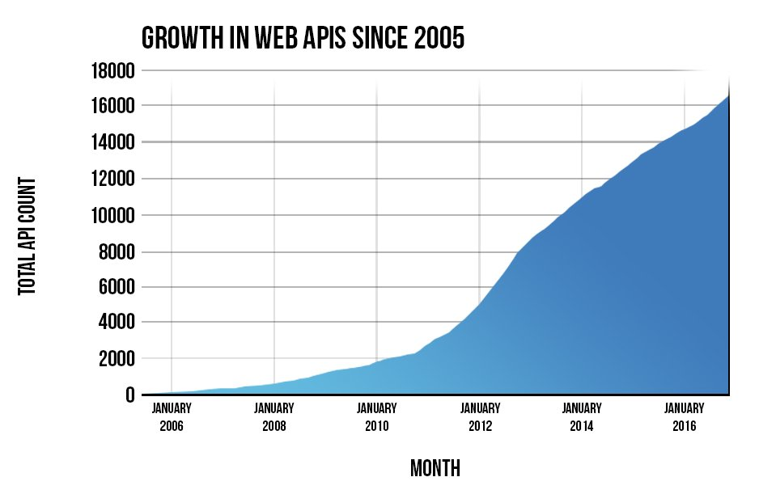

Importando dados
A atividade de obtenção de dados é uma das mais importantes e necessitarias para se trabalhar em data science.
Podemos ver no diagrama abaixo (adaptado de Wickham & Grolemund, 2017), as principais etapas que veremos nesse curso e como tudo começa com a Importação dos dados.

Existem diversas maneiras de importar o dados em R
as principais maneiras são:
- Imortando de arquivos locais
- Importação via WEB
- Aceso a banco de Dados
vamos olhar cada uma delas
1 Importando de arquivos locais
Essa é a maneira que todos estão mais acostumados , em geral se importa um arquivo texto do tipo CSV ou ainda TXT com algum tipo de delimitador, que pode ser espaço, ou qualquer outro.
em geral se utiliza a função read.table ou alguma de suas variantes como read.csv ou read.csv2
alguns exemplos:
dados <- read.csv2("planilha.csv") xxxxxxxxxxdados2 <- read.table ("arquivo.txt",header=F,sep=";") Também algumas vezes podemos importar algum formato oriundo de outro software, como o SPSS,STATA,SAS, ou até mesmo o extinto formato DBF. no R é necessário chamar a library foreign
xxxxxxxxxxlibrary(foreign)dados <- read.spss("dados.sav")dados2 <- read.dbf("datasus.dbf")Além desses formatos mais usuais existem vários outros formatos que podem ser lidos, entre eles destacam-se o XML , JSON e o NetCDF
Clique AQUI para aprender mais sobre XML e JSON
2 Importando via WEB
Uma das facilidades do R que é pouco explorada é a possibilidade de ler arquivo atravez da internet. Algumas das funções podem ser acessadas diretamente e referenciar um link remoto (URL).
Veja o exemplo abaixo:
xxxxxxxxxxindicadores <- read.csv2("http://www.campinas.sp.gov.br/arquivos/financas/ra_indicadores_2015.csv")o R simplesmente vai acessar e importar o dado atravez da URL
Veja o exemplo abaixo, repare que apesar da AVISA dizer que é um arquivo do tipo CSV, na verdade , trata-se de um arquivo TEXTO delimitado pelo caractere |
xxxxxxxxxx anvisa <- read.table("https://dados.anvisa.gov.br/dados/TA_PRECOS_MEDICAMENTOS.csv",sep = '|',header=T)Podemo também pedir ao R que faça o download de um arquivo por exemplo
xxxxxxxxxxdownload.file("ftp://ftp.datasus.gov.br/territorio/tabelas/base_territorial.zip","base_terr.zip")Vamos agora "abrir" o arquivo ZIP em primeiro lugar vamos descobrir qual local o sistema operacional esta usando como temporário.
xxxxxxxxxxloc <- tempdir()locEm seguida vamos mandar extrair o conteúdo do ZIP nesse diretório temporário e usar o dir desse local para verificar se o conteúdo foi expandido.
xxxxxxxxxxunzip("base_terr.zip",exdir=loc)dir(loc)a partir dai você poderia importar um ou mais dos arquivos que foram expandidos.
xxxxxxxxxxarq <- paste0(loc,"/","tb_uf.csv")tb_uf <- read.csv2(arq)2.1 Importando o SINASC diretamente do DATASUS
até aqui você já viu todos os elementos necessários para fazer a importação de dados direto do FTP do DATASUS, o que precisamos é um workflow, ou seja, um plano, para fazer a importação.

em primeiro lugar vamos usar o pacote RCurl que permite acesso a paginas http , https, ftp etc...
xxxxxxxxxxlibrary(RCurl)url <- 'ftp://ftp.datasus.gov.br/dissemin/publicos/SINASC/NOV/DNRES/'lista <- getURL(url)vamos inspecionar o objeto lista. como vocês podem observar esse arquivo precisa ainda ser transformado para ser usado.
xxxxxxxxxxlista <- strsplit(lista,'\n')após pedirmos ao R para inserir uma quebra apos o caractere '\n' agora fica mais fácil de entender a listagem que obtivemos!
vamos selecionar como UF o Acre pois o tamanho dos arquivos é pequeno e a rede da ENSP em geral não é rápida.
Aqui vamos fazer um parêntesis para falar de um recurso extremamente poderoso, as expressões regulares conhecidas por REGEX
Agora que vocês já aprenderam um pouco sobre as REGEX vamos selecionar as linhas que possuem as DN do ACRE
xxxxxxxxxx l2 <- grep ('DNAC',lista[[1]],value = T) ## DN do ACREde uma maneira simples selecionamos todas que possuem o padrão DNAC no nome. Veja a variável "l2" , ainda existem varias colunas, e só queremos o nome do arquivo!
Uma abordagem simples seria simplesmente:
xxxxxxxxxx l3 <- substr(l2,40,52)mas suponhas que a posição não fosse sempre a mesma, seria possível fazer com REGEX? Veja só:
xxxxxxxxxx l3 <- gsub('.*(DNAC[1-2][0-9]{3})','\\1',lista[[1]][grepl("DNAC",lista[[1]])])Verifique o objeto l3 para se certificar que tenhamos somente um vetor de caracteres com o nome dos arquivos! Aqui temos 20 nomes de arquivos , em virtude da falta de velocidade da internet na ENSP vamos trazer somente os 3 primeiros anos!
Como fazer isso?
Vamos precisar de um pacote chamado read.dbc recentemente colocado no CRAN. Foi desenvolvido por uma engenheira de software da globo.com chamada Daniela Petruzalek.
xxxxxxxxxx install.packages('read.dbc')Agora vamos precisar criar um local para armazenar os arquivos. O mais simples nesse caso é criar uma lista. Vamos chamá-la a lista de sinasc!
xxxxxxxxxx sinasc <- list()em seguida precisamos fazes um loop (laço) no R para fazer o download e ler cada um dos arquivos , armazenando os resultados e em seguida removendo o arquivo temporário!
xxxxxxxxxxfor (i in 1:3) { loc <- paste0(url,l3[i]) download.file(loc,"temp.dbc",mode="wb") sinasc[[i]] <- read.dbc("temp.dbc",as.is=T) file.remove("temp.dbc")}Se tudo correr bem você vera os arquivos sendo baixados!
vamos inspecionar o primeiro data.frame (repare o tipo de cada variável)
xxxxxxxxxx str(sinasc[[1]])Vamos pegar o ano para nomear nossa lista!
x anos <- substr(l3,5,8) ## OU anos <- gsub('.*([0-9]{4})\\.[A-Z,a-z]{3}','\\1',l3) names(sinasc) <- anos[1:3]Agora que demos um nome a nossa lista vamos ver o comportamento do PESO usando um summary para cada ano.
xxxxxxxxxx lapply(sinan, function(x) {summary(as.numeric(x$PESO))})Convertendo para um unico DF
xxxxxxxxxx todos <- do.call(rbind,sinasc) todos$ANO <- substr(todos$DTNASC,5,8)Vamos verificar o número de nascidos por ano!
xxxxxxxxxx table(todos$ANO)RBaixe AQUI o arquivo final em R
OBS : a partir de 1999 a estrutura de dados muda, seria necessário compatibilizar para poder unir os arquivos.
2.2 Acessando o feed de notícias RSS do Ministério da Saúde
Vamos acessar o RSS que é o serviço de notícias do MS. O formato dos dados está em XML.
xxxxxxxxxxlibrary(XML)ms <- "http://portalsaude.saude.gov.br/index.php/cidadao/principal/agencia-saude?format=feed&type=rss" xxxxxxxxxxdoc <- xmlTreeParse(ms)xmlRoot(doc)src <- xpathApply(xmlRoot(doc), "//item")srcPodemos obter dados de uma única notícia
xxxxxxxxxx um <- xmlSApply(src[[1]], xmlValue) um[[1]] um[[6]]ou de um conjunto de notícias
xxxxxxxxxxtit <- xpathApply(xmlRoot(doc), "//title")e finalmente podemos como no exemplo anterior fazer um LOOP e transformar todas as notícias em um único data.frame
xxxxxxxxxxNOTICIA <- NULLfor (i in 1:length(src)) {foo <- xmlSApply(src[[i]], xmlValue)tmp <- data.frame(t(foo), stringsAsFactors=FALSE)NOTICIA <-rbind(NOTICIA, tmp)}
e vamos verificar o conteudo final do dataframe
xxxxxxxxxxNOTICIA
2.3 Extraindo conteúdo de uma tabela em HTML publicada na Internet
Vamos extrair uma tabela que está dentro de uma pagina no MS , a pagina contem dados sobre casos de microcefalia em abril de 2016
Supondo que você necessita desses dados é possível extrair os dados por estado dessa página?
xxxxxxxxxxlibrary(XML)
xxxxxxxxxxurl <- 'http://www.brasil.gov.br/saude/2016/04/brasil-tem-1-168-casos-de-microcefalia-confirmados'
micro <- readHTMLTable(url) # Le a tabela, a função retorna uma lista!
micro <- micro[[1]][-c(1,2),] # remove as linhas adicionais no Início
names(micro) <- c('Local','Investgados','Confirmados','Descartados','Total') # da nomes as colunas importadasInspecionando agora nosso DF micro vemos que exitem ainda linhas para as regiões do país e um total geral. Como estamos apenas interessados na informação por UF precisamos remover essas linhas.
micro.uf <- micro[!grepl('Região|Brasil',micro$Local),]Agora nosso objeto tem apenas as linhas relativas as UFs, no entanto use a função str em nosso objeto. Todas as linhas são do tipo character , vamos precisar transformá-las. no entanto não será uma tafera simples, repare que varias colunas têm o '.' indicando mil e que São Paulo tem um caractere especial 'ª'. para acertar usaremos uma vez mais as REGEX para remove tudo que não forem números das colunas que queremos transformar.
m1 <- apply(micro.uf[,2:5], 2, function(x) {gsub('[^0-9]','',x)})agora o objeto m1 está pronto para ser convertido em tipo numerico.
m2 <- as.data.frame(apply(m1, 2, as.numeric))
agora temos o objeto m2 todo numerico, no entanto falta o o nome das UF
aqui podemos fazer diferentes escolhas.
colocar as UFs nome como nome da linha usando rowname
rownames(m2) <- micro.uf$Local
concatenar o nome das UFs como primeira coluna
m3 <- cbind(micro.uf$Local,m2)
criar um nova coluna e ordenar
m2Local
m2 <- m2[,c(5,1:4)]
Como se pode ver acima foi bem "fácil" ler a tabela usando readHTMLTable no entanto colocar o dado pronto para ser trabalhado exige vários passos adicionais.
2.4 Usando uma API para acessar Dados
O que é um API?
Application programming interface (API) é um Conjunto de sub-rotinas , protocolos e ferramentas para desenvolver aplicação (software). Em termos gerais é um conjunto de métodos de comunicação entre diversos software e ate mesmo do software com o hardware. Tem sido usado extensivamente no desenvolvimento de software.
O que abordaremos aqui neste curso é o uso de APIs via Web , conhecidos por Web Services ou Web API. Como podemos notar no gráfico abaixo, seu uso tem crescido enormemente com a ideia de repositórios de dados, e a importância dado por governos e instituições a política de dados abertos.

2.4.1 a API do SIDRA/IBGE
O Sistema IBGE de Recuperação Automática - SIDRA , está com seu conteúdo disponível via API.
a API do Sidra pode ser acessada em http://api.sidra.gov.br .

cada API tem um conjunto de formatos e regras para acessar os dados. No caso do SIDRA cada tabela possui um conjunto de atributos que podem ser acessados. Vamos por exemplo ver a tabela 136

Como podemos ver essa tabela está disponível para os censos de 1991,200 e 2010 , temos o total de população residente e o percentual e diversos níveis territoriais para escolher.
Como faríamos para buscar a população por todas as raças/cores para o censo de 2010 por microrregiões?
Nossa linha seria:
/t/136/p/2010/v/93/c86/all/n9/all
Para obter no R esses dados vamos adicionar a linha acima a URL de chamada da API Sidra
library(RCurl) library(jsonlite) q <- "http://api.sidra.ibge.gov.br/values/t/136/p/2010/v/93/c86/all/n9/all" resp <- fromJSON(q,simplifyDataFrame = TRUE)
Como pode ser visto o resultado foi um arquivo no formato JSON , como no exemplo das tabelas em HTML o dado veio com uma linha extra onde existe uma descrissão do campo. vomos remover essa linha.
dic <- resp[1,] #dicionario da tabela resp2 <- resp[-1,] #removendo a linha um duplicada!!! head(resp2)
como podemos ver a tabela agora parece correta, vamos ver a frequência da variável raça/cor
table(resp2$D3N)
se quisermos criar uma variável com o código UF, podemos extrair da variável com o nome da Microrregião.
resp2$uf <- gsub('.*([A-Z]{2})$','\\1',resp2$D4N)uma ultima questão permanece é que todos os campos são caracteres, mas você só vai precisar do Valor V em numérico.
str(resp2)
3 Acesso a Base de Dados
Para acessar um SGBD no R é necessário instalar alguns pacote que permita a interação entre o BD pretendido e o R.
Existem também maneira de usar o próprio Sistema Operacional, através do ODBC (acrônimo para Open Database Connectivity) é um padrão para acesso a sistemas gerenciadores de bancos de dados (SGBD). Este padrão define um conjunto de interfaces que permitem o uso de linguagens de programação, no caso o R, mas também necessita a instalação de "drivers".
Vamos usar aqui o pacote RSQLite para demonstrar as funcionalidades da conexão via SQL .
xxxxxxxxxx install.packages("RSQLite")Após a instalação, vamos chamar e conectar a uma base SQLite chamada meuBD.sqlite ,caso ela não exista será criada!
library(RSQLite)
xxxxxxxxxx canal <- dbConnect(RSQLite::SQLite(), "meuBD.sqlite")O comando a seguir lista todas as tabelas existentes no BD
dbListTables(canal)
Como o BD foi criado agora, não existem tabelas. Vamos escrever nele nossa tabela do SINAN que baixamos do DataSUS
xxxxxxxxxx dbWriteTable(canal,"SINASC",todos)Agora vamos novamente verificar as tabelas existentes!
xxxxxxxxxx dbListTables(canal)Em seguida vamos fazer um query na tabela
xxxxxxxxxx dbGetQuery(canal, "SELECT ANO,COUNT(*) AS TOTAL FROM SINASC GROUP BY ANO")Que tal agora um query mais complexo!
xxxxxxxxxxq <- "SELECT ANO, SUM(CASE WHEN SEXO = 1 THEN 1 END) as MASCULINO, SUM(CASE WHEN SEXO = 2 THEN 1 END) as FEMININO, SUM(CASE WHEN SEXO = 1 THEN 1.0 END) / SUM(CASE WHEN SEXO = 2 THEN 1.0 END) as RAZAO FROM SINASC GROUP BY ANO"dbGetQuery(canal,q)vamos criar uma serie temporal.
xxxxxxxxxx q2 <- "select ano, substr(DTNASC,3,2) as mes ,count(*) as casos from sinasc group by ano,mes order by ano,mes"serie <- dbGetQuery(canal,q2)boxplot(serie$casos ~ serie$mes)nasc.ts <- ts(serie$casos,start=c(1996,1),freq=12)plot(nasc.ts)e por fim, vamos desconectar da base!
dbDisconnect(canal)
4 Armazenado os dados
Como vimos nessa aula o processo de importar pode ser trabalhoso e para evitar a necessidade de se executar repetidamente todo o processo se faz necessário armazenarmos os resultados obtidos em algum formato que seja fácil de recuperar e seguro.
Algumas opções são:
- Armazenar no próprio R
- Armazenar em algum SGDB (SQL ou NoSQL)
- Exportar para formatos texto tais como CSV, TXT
Vamos discutir as vantagens e desvantagens de cada um dos métodos e como melhor utilizar essas estratégias. Começaremos pela pior opção, que e a escolha mais comum de grande parte dos alunos , isso quando, não executam repetidamente o mesmo script de importação!
Você fez a transferência de um conjunto de arquivos , vamos supor do DATASUS, fez uma serie de procedimentos para transformar esse dado e por fim “Exporta” para um formato TEXTO ? Precisamos entender que formatos texto ainda que bons como formato para a “transferência” de dados são uma péssima escolha para armazenar de forma eficiente e segura nossos dados.
Já vi algumas vezes alunos que ao final do dia de trabalho “exportavam” novamente de onde tinham trazido o dados, por exemplo do SPSS ou do STATA. O que os faz supor que estão mais seguros nesse formato? É uma boa ideia ficar importado/exportando o dados?
Assim recomendo fortemente que ou você armazene seu dados no formato nativo do R ou gere um Banco de Dados e passe a consumir os dados a partir dele.
Quanto a com manter os dados em R vejo que existe uma dificuldade no entendimento de como o R armazena e carrega seus dados. Vamos tentar esclarecer aqui esses conceitos de maneira que todos possam entender e usar melhor esses recursos.
Como todos sabe, o R trabalha com os objetos em memoria, e quando saimos do R ou do Rstudio ele pergunta se desejamos salvar os dados, ou seja, todos os objetos em memoria. na verdade o seguinte função é executada.
save.image()
todos os objetos são salvos com o nome ".RData" apesar desses nome ser perfeitamente legal no Linux e MAC o Windows tem certos problemas em lidar com ele. Nos sistemas derivados do UNIX arquivos começados em ponto são invisíveis.
save.image(file='trabalho_16_out_2017')
Nos comandos acima todo o conteúdo de nosso espaço de trabalho serão salvos. Na forma .RData ou com o nome atribuído.
E se quisermos salvar apenas um objeto? em geral quando trabalhamos no R produzimos varios arquivos intermediários que em geral não são necessários. Lembando que a função ls ou a menos conhecida objects listam todos os objetos no seu espaço de trabalho.
save(dados,'backup.Rdata')
O comando acima salva somente o objeto de nome dados e seu conteúdo ficara armazenado no arquivo de nome 'backup.Rdata' .
Caso queira salvar mais de um arquivo basta separa o nome deles com vírgulas
save(obj1,obj2,obj3,file='backup.Rdata')
Para carregar novamente os dados, por exemplo, no dia seguinte use a função load
load('backup.Rdata')As vantagens do formato nativo do R são:
- o arquivo é pequeno pois o .RData é compactado
- a carga do objeto é muito rápida quando se comparada a importação
- não ha necessidade de se passar por todo o processo de importar o dado.
- ajuda a torna o processo de análise reprodutível
Para dados pequenos ou médios não há grandes problemas , mas quando trabalhamos com bases maiores pode ser vantajoso armazenar no sgdb. Imagine que você tem um banco que ocupa 2Gbytes de RAM ao ser carregado no R e onde vários procedimentos de gerenciamento do dado serão realizados , muito desses procedimentos necessitam muitas vezes alocar a mesma quantidade de memória que o banco ocupa. Assim, nesse exemplo digamos que você possui uma máquina com 8 Gbytes de RAM, parece muito, mas ao usar um objeto de 2 Gb, limpando, criando subsets você rapidamente verá que sua máquina fica lenta, pois não se esqueça que além do R o sistema operacional, e demais softwares abertos também consumem muita memória (especialmente se você usa windows)
vamos supor que você tem um banco grande, que está no R e foi importado e já está pronto para ser analisado. no entanto você opta por armazenar no SQLITE como já foi visto no item 3. seu objeto se chama bigbanco e você quer criar a tabela big na base de dados base
library(RSQLite) conecta <- dbConnect(RSQLite::SQLite(), "base.sqlite") dbWriteTable(conecta,"big",bigbanco) dbListTables(canecta)
no dia seguinte basta ler o banco, e quem sabe fazer um subset para escolher as "causas"
library(RSQLite) con <- dbConnect(RSQLite::SQLite(), "base.sqlite") dados <- dbGetQuery(con,"SELECT * FROM big WHERE dt_evento BETWEEN "2008-01-01" AND "2016-12-31";
Exercícios propostos
a URL abaixo possui dados de todas as UBS em funcionamento. baixe os dados que sa um CSV separados por ';' e conte o numero de UBS por UF
'http://sage.saude.gov.br/paineis/ubsFuncionamento/lista.php?output=csv&'
Transforme os campos lat e long em numerico
Salve em formato .Rdata
Mude o final da URL de output=csv& para output=json& e leia novamente o dado, notou alguma diferença?